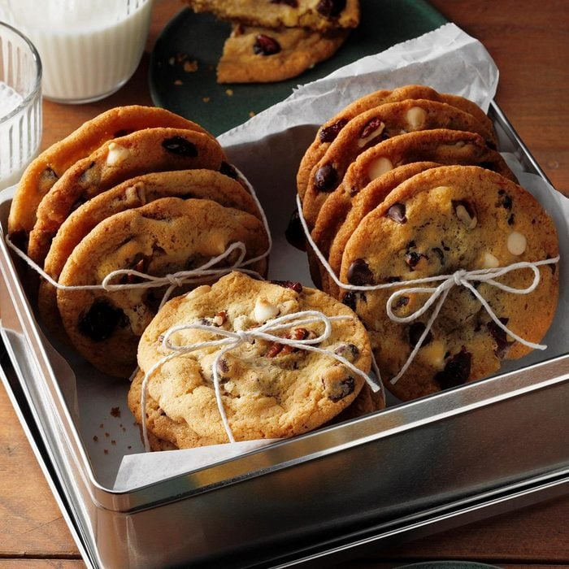

CRANBERRY CHIP COOKIES

Description
These simple cookies are adaptable: Swap out your favorite dried fruit for the cranberries,
or replace white chocolate chips with semi-sweet or butterscotch. This makes a big batch of batter,
so you can bake half and freeze the rest for an even faster cookie fix next time.
Ingredients
- 1/2 cup butter, softened
- 1/2 cup shortening
- 3/4 cup sugar
- 3/4 cup packed brown sugar
- 2 large eggs, room temperature
- 1 teaspoon vanilla extract
- 2-1/4 cups all-purpose flour
- 1 teaspoon baking soda
- 1/2 teaspoon salt
- 1 cup semisweet chocolate chips
- 1 cup white baking chips
- 1 cup dried cranberries
- 1 cup chopped pecans
Directions
- Preheat oven to 375°.
- In a large bowl, cream butter, shortening and sugars until light and fluffy.
Add eggs, one at a time, beating well after each addition.
- Beat in vanilla. Combine the flour, baking soda and salt; gradually add to the creamed mixture and mix well.
- Stir in the chips, cranberries and pecans.
- Drop by tablespoonfuls 2 in apart onto ungreased baking sheets.
- Bake until golden brown, 9-11 minutes.
- Cool on pans 2 minutes before removing to wire racks to cool completely.
- Your Dessert is ready!